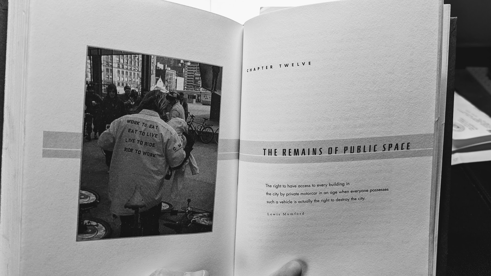
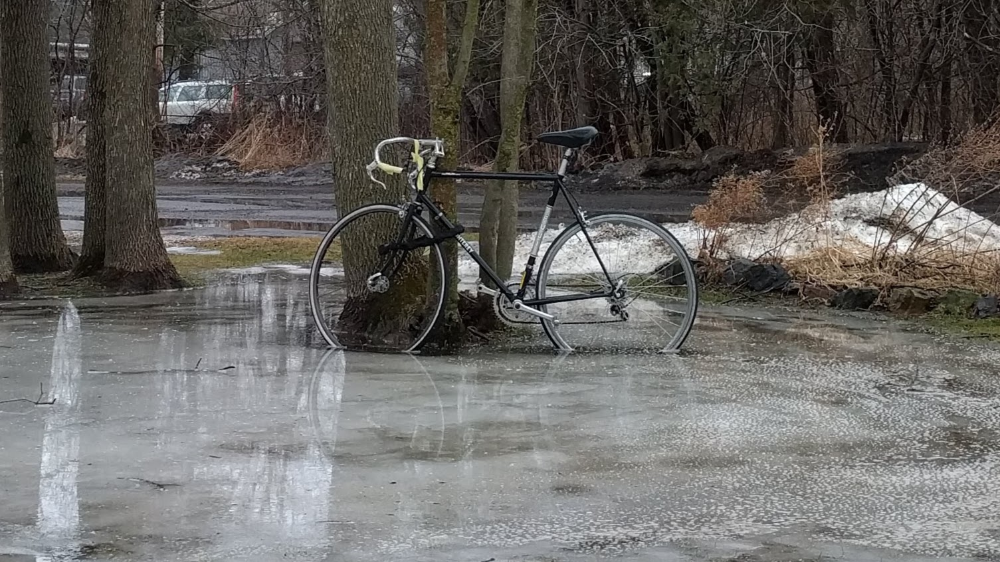

Once a cyclist

Oh check it out - another middle-aged man on a bike, clad in lycra, spouting opinions.
sigh.
Now that I’ve been forced to ditch running, I’ve started cycling. Late in a Vermont winter, this has meant ponying up for a trainer attachment, plugging my old cross bike into it, and trying my damndest to occupy exactly the same workout schedule, but now with spins instead of paces. As new as this all feels - and as well-trodden a path it is - I do have a history with these wheels.
The rage⌗
Among the bucolic farm fields and hills of Addison County in Vermont lies Middlebury College. It was here in 2002 that a housemate gave me a reading assignment that would turn me into an insufferable, righteously-aggrieved urbanist forevermore: Travis Hugh Culley’s The Immortal Class.

In this love letter to the cycling culture of 90s Chicago was the weight of history, the liberty of the untethered particle, and an unadulterated scorn for cars and the forces that make American cities so dangerous and inhospitable for humans. Having never set foot in Chicago I can’t say how well the book has aged. Hell, I hadn’t set much of a foot in any city when I first read this. But after two years on a bike commuting around Boston, I do feel like I’ve earned some of the anger and determination that I first took on from this book. I’ve also channeled some of it into ideas about how to make my own tiny city a better place.
This book treated bicycles as tools of liberation.
The burn⌗
Later, in the summer of 2002, I was living with a friend in Boulder, trying to find short-term jobs and coming up empty. I filled the time with a borrowed hard-fork mountain bike, zooming amateurishly around town. I struggled up Flagstaff Mountain every day in the pedals, regularly passed by much-fitter elderly Coloradans. And importantly, I was glued to the TV at a downtown bike shop for every stage of the Tour de France.
These were smack in the middle of Lance Armstrong’s glory years, and I soaked it all up. I read through his autobiography It’s Not About the Bike twice, searching for performance notes that actually applied to me: long hours in the saddle, less beer, less pizza, don’t worry about being aerodynamic until it matters. As the title announced, his book was about him, about his journey and his capabilities. There was little of Culley’s radicalism. But in my fandom, I had set myself up for a crash, and I think I’m not alone in that.
The crash arrived in slow motion, and Armstrong’s fierce denials of culpability made it all the worse. By the time of his admission of doping guilt in 2013, I had long since left my enthusiasm for bike racing behind me in disgust.
But now, back on two wheels, I’m looking for new inspiration, because I damn well need it, here at the onset of Spring.
